-
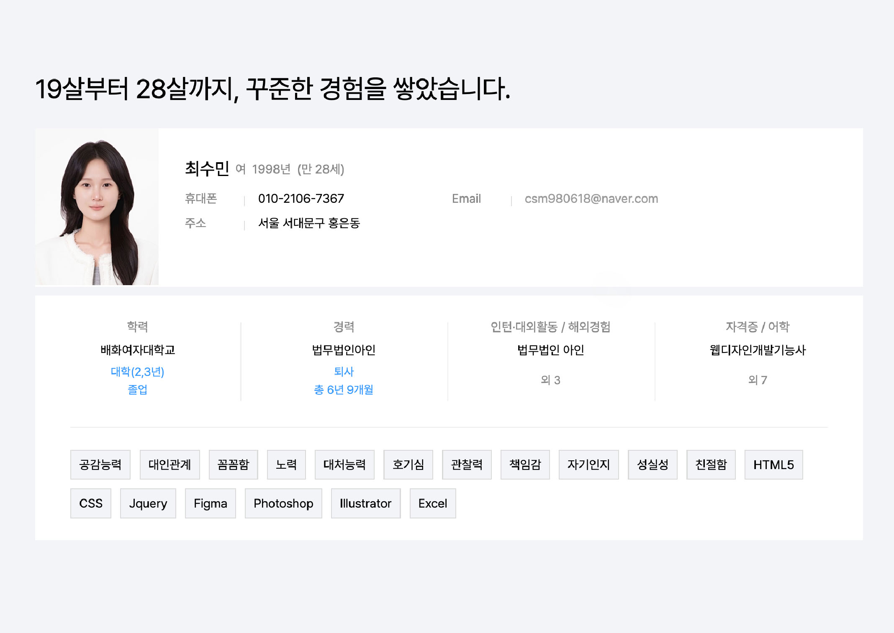
-
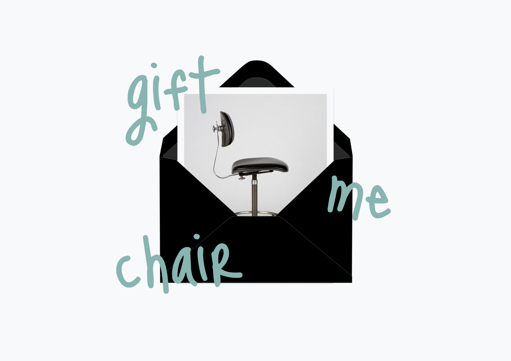
-
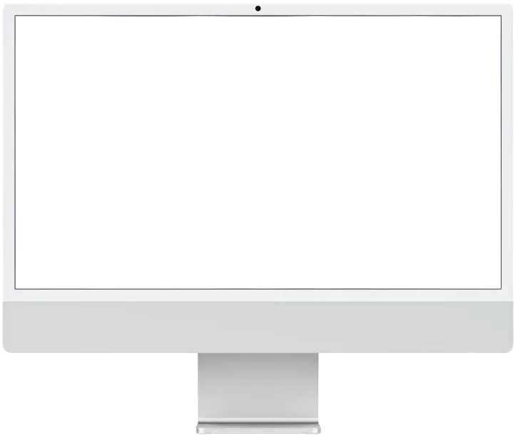
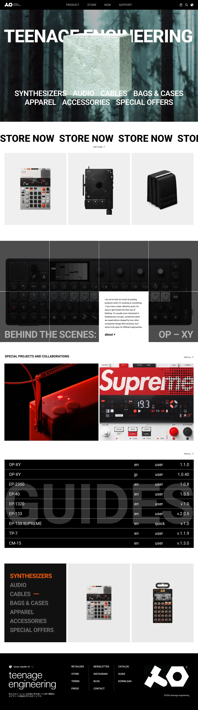
-
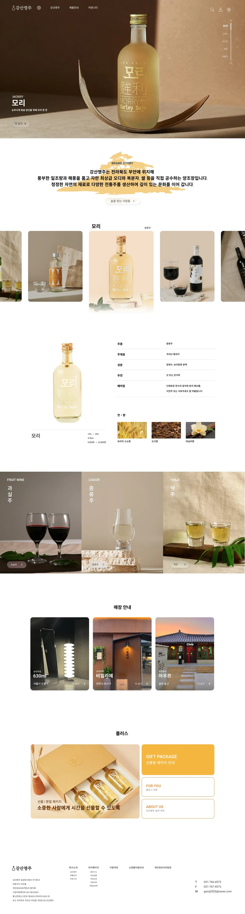
-
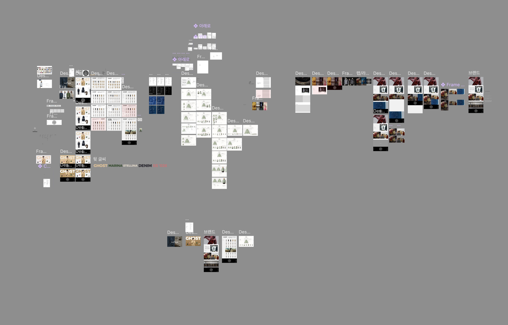
-
-
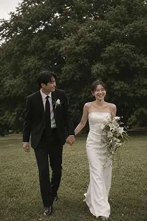
인물_1
-
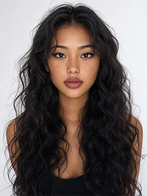
인물_2
-
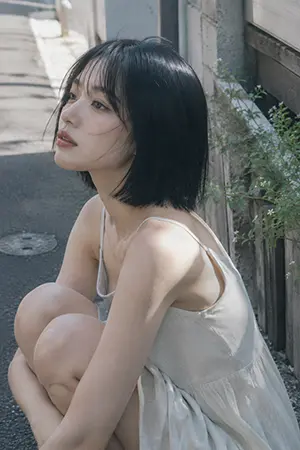
일본 초여름 분위기
-
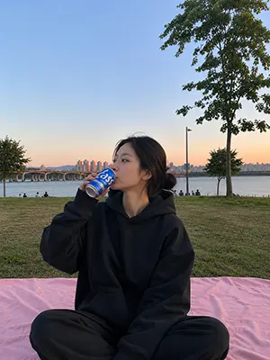
한강 나들이
-
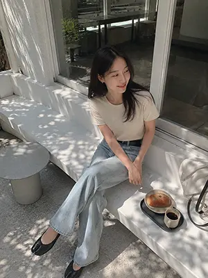
메이플 캐릭터
-
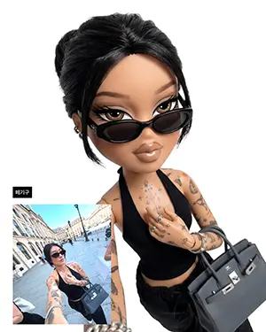
브랫츠돌
-
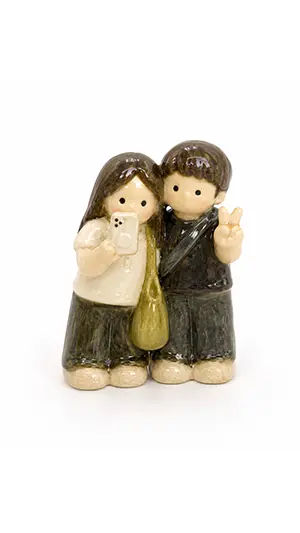
도자기 인형
-
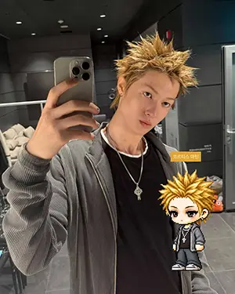
폴리포켓
-
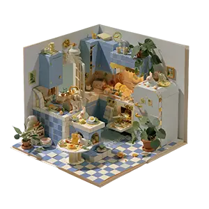
팝업북
-
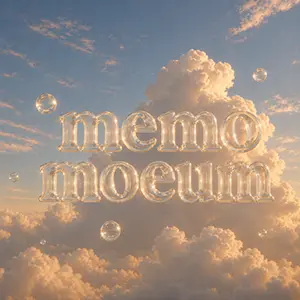
로고
-
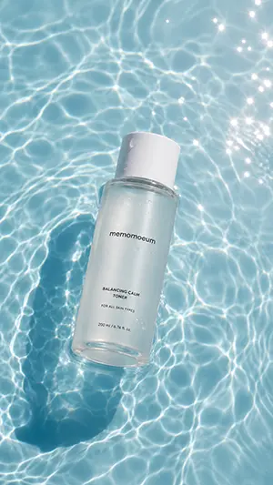
제품 컨셉샷
-
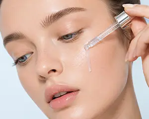
제품 사용 클로즈업
-
-
이력서
궁금해하실 핵심 내용들을 담았습니다.
-
디자인이력서
저는 어떤 사람인지에 대해 여기에 담아 왔습니다.
이력서에 담지 못한 저를 확인해보세요. -
TEENAGE ENGINEERING 리뉴얼 프로젝트
teenage engineering의 브랜드 아이덴티티는 유지하면서 정보 탐색이 직관적일 수 있도록 네비게이션 수정하였고, 브랜드 무드가 들어나는 콘텐츠들을 메인 페이지에 배치하여 제품 정보를 제공하는데 집중했습니다.
기여도 개인 프로젝트 100% 디자인 30H (5D * 6H) 구현 24H (4D * 6H) 툴 html5 css js figma -
강산명주 리뉴얼 프로젝트
기존 상품 이미지 중심의 구성에서 벗어나, 온라인 고객의 궁금증과 불안 요소를 해소하기 위해 사용자 경험 흐름에 집중한 강산명주 리뉴얼 프로젝트입니다. 고객이 필요로 하는 정보를 중심으로 콘텐츠를 재구성하여 제품의 매력과 브랜드 가치를 효과적으로 전달하고자 했습니다.
기여도 개인 프로젝트 100% 디자인 24H (4D * 6H) 구현 30H (5D * 6H) 툴 html5 css js figma chatGPT - 진행 중인 프로젝트
-
@memomoeum
직접 만든 이미지를 클릭하면 프롬프트를 확인하실 수 있습니다.
- COT: 퓨샷 20대 후반 동양인 여성, 쌍커풀이 없고 긴 눈, 눈썹과 눈 사이 거리가 긴 편, 삼백안으로 날카로워 보임, 얼굴의 살집이 없고 날렵함, 코는 좁고 코끝이 버선코처럼 높음, 입술은 도톰한 편으로 윗입술과 아랫입술 두께가 비슷하고 도톰함, 입술산이 도톰함, 얼굴형은 날렵하고 옆광대가 살짝 있는 편, 하얀 피부, 얼굴 전체에 자연스럽게 퍼져있는 주근깨, 눈썹은 밝게 탈색함, 피부화장은 광채나고 투명함(혈색이 비치는 정도), 입술은 광이 있고 혈색을 돋보이게 함, 아이메이크업은 갈색 마스카라 정도만 하고 뷰러로 올리진 않았음. 헤어는 검정색으로 5:5가르마에 명치까지 오는 긴 생머리, 앞머리는 없음.
- COT: 퓨샷 20대 초반 동양인 여성, 동그랗고 턱이 짧지만 턱선이 보임, 옆광대가 없어 매끈한 얼굴형, 눈은 크고 동그랗다, 쌍커풀은 인아웃라인, 눈꼬리는 살짝 올라감, 코는 작고 동그랗지만 콧대가 있고 곧음, 입술은 크고 도톰하고 동그랗다, 태닝을 해서 건강한 피부톤+주근깨+자연스럽게 결 정리를 한 피부 화장+검정색 마스카라를 위 아래 모두 함+아이라인 검정색+입술은 모브톤의 매트한 오버립+헤어는 허리까지 오는 긴 히피펌 머리
- COT: 퓨샷 일본 초여름 분위기, 자연광, 동양인 20대 중반 여성, 검정색의 턱선보다 살짝 짧은 테슬컷의 칼단발 머리, 차가운 이미지, 인물은 쭈구려 앉아 무릎을 안고 있음, 얼굴 방향과 시선은 왼쪽을 향함, 깨끗하고 맑은 피부, 속눈썹과 입술이 강조된 메이크업, 입술이 도톰하고 큰 편, 입술색은 피부색과 어울리는 톤의 튀는 컬러, 표정은 무표정, 눈은 커다랗지만 고개를 살짝 든 채 내려다보는 모양, 빈티지한 느낌을 위한 살짝의 그레인 효과, 조명은 자연광
- COT: 퓨샷 한강에서 피크닉 여름, 시간대는 오후 6-7시 정도, 하늘은 맑고 하늘색에서 분홍색으로 물들어감, 한국 여름 저녁 특유의 맑고 선선한 분위기, 장소는 양화한강공원, 날이 맑아 한강도 푸르게 보임, 잔디밭에 돗자리를 깔고 그 위에서 찍은 사진, 돗자리는 연분홍색 담요 느낌, 사진 구도는 배경엔 하늘, 한강, 한강다리, 잔디밭, 나무로 구성, 인물은 돗자리 위에서 양반다리를 하고 팔을 가운데에 받쳐 쭉 피고 있음, 고개는 왼쪽 45도 시선은 고개를 따라 자연스럽게. 약한 바람이 불어 머리카락이 자연스럽게 흩날림. 첨부한 이미지의 얼굴, 헤어스타일, 체형, 골격, 피부톤을 유지하고 배경과 포즈만 변경 아이폰으로 찍은 자연스러운 일상 사진. 눈높이 시점, 전신이 모두 보이고 인물은 프레임 중앙 위치, 자연광, 실사, 고해상도
-
COT: 후카츠
[MAPLE PLAYER FRAME SPEC]
한국 MMORPG 플레이어 아바타 구조
실제 메이플스토리 플레이어 캐릭터 비율 적용
* 머리 + 헤어 : 전체 높이의 60~65%
* 몸통 : 15~18%
* 다리 : 20~25%
* 2.0~2.3등신
#시점
* 35~45도 Quarter View
* 양쪽 눈이 모두 보여야 함
* 거의 평면적인 2D 스프라이트
#얼굴
* 눈은 얼굴 하단부에 위치
* 눈 간격 넓음
* 가로로 넓은 평평한 눈
* 큰 눈동자
* 눈동자 하이라이트
* 코 표현 금지
* 매우 작은 입
* 부드러운 홍조
#목
* 목 표현 금지
* 머리가 몸통에 바로 연결
* 턱 아래 바로 의상 시작
#헤어
* 캐릭터 정체성의 핵심
* 두상보다 훨씬 큰 볼륨
* 실루엣 우선
* 가닥 표현 최소화
* 상단 하이라이트 존재
#신체
* 매우 작은 몸통
* 짧은 팔
* 짧은 다리
* 단순한 원통형 팔다리
* 관절 표현 최소화
#장비
레이어 구조 유지
Hair
Hat
Face Accessory
Top
Bottom
Shoes
Cape
Weapon
장비와 헤어가 캐릭터 개성을 결정해야 함
#포즈
* Idle Standing Pose
* 캐릭터 선택창 느낌
* 점프 금지
* 전투 포즈 금지
* 액션 연출 금지
[PIXEL RENDERING SPEC]
#중요:
고해상도 픽셀아트 금지
Ultra Detailed Pixel Art 금지
HD Pixel Art 금지
Fine-Grained Pixel Art 금지
#목표:
32~64px 게임 스프라이트를 확대 표시한 느낌
* Low-resolution game sprite
* Enlarged MMORPG sprite
* Chunky pixel structure
* Grid-aligned pixel art
* Visible pixel blocks
* Clean 1px outline
* Limited color palette
* Flat color shading
* Solid tone pixel blocks
* Minimal shading
* No dithering
* No smooth gradients
* No airbrush effects
[출력 조건]
Canvas Size: 1080 x 1080
Perfect Square Format
Pure White Background (#FFFFFF)
Single Character Only
Full Body Visible
Centered Composition
Character Occupies Approximately 75% Of Canvas Height
No Cropping
No Additional Characters
No Pets
No Environment
No Scene
No Background Objects
No Ground
No Text
No Logo
No Watermark
No UI
[절대 금지]
Pokemon Style
Terraria Style
Stardew Valley Style
Ragnarok Online Style
JRPG Battle Sprite
Octopath Traveler Style
Western Cartoon
Disney Style
Realistic
Semi Realistic
3D Render
Illustration
Concept Art
Splash Art
Poster
Wallpaper
Anime Illustration
Digital Painting
Cinematic Lighting
Ultra Detailed Sprite
High Definition Pixel Art
Fine-Grained Pixel Art
Smooth Gradient Shading
Airbrush Shading
Create {캐릭터명} as a true MapleStory player avatar sprite.
The result must look like an actual MapleStory player character converted from {캐릭터명}, not a generic pixel-art character.
당신은 애니메이션, 게임, 만화 캐릭터를 메이플스토리 플레이어 아바타 스프라이트로 변환하는 전문 픽셀 아트 디렉터입니다.
[작업]
1. {캐릭터명}의 대표 외형 특징을 분석한다.
* 헤어스타일
* 머리색
* 눈 색상
* 대표 의상
* 대표 액세서리
* 대표 무기
* 대표 상징 요소
* 대표 색상
2. 위 특징을 유지하면서 메이플스토리 플레이어 캐릭터 아바타 구조로 재해석한다.
3. 결과물은 일반 픽셀아트가 아니라 실제 메이플스토리 플레이어 캐릭터 스프라이트처럼 보여야 한다.
-
COT: 후카츠
Transform the uploaded person into a highly realistic luxury Bratz-inspired fashion doll while preserving the person's exact identity and recognizability.
The uploaded image is the master reference.
#Preserve exactly:
- original hairstyle
- hair color
- hair length
- bangs
- hair volume
- clothing
- shoes
- accessories
- body shape
- body proportions
- pose
- hand position
- body angle
- skin tone
- makeup colors
- facial expression
- composition
Do NOT redesign or replace any of these elements.
Only transform the facial sculpt and surface material into an authentic premium Bratz fashion doll while maintaining clear resemblance to the uploaded person.
#FACE
Authentic 2000s MGA Bratz doll face.
Very large elongated almond-shaped eyes.
Eyes occupy noticeably more space than on a real human.
Half-lidded confident gaze.
Slightly lifted outer eye corners.
Large glossy irises.
Dark limbal rings.
Multiple layered catchlights.
Glass doll eyes.
Long separated upper eyelashes.
Soft lower lashes.
Sharp winged eyeliner.
Soft smoky eyeshadow.
Thin softly arched eyebrows.
Very small sculpted nose.
Tiny nostrils.
Smooth narrow nose bridge.
Small pointed nose tip.
Short philtrum.
Full glossy lips.
Defined cupid's bow.
Plump lower lip.
Neutral nude gloss.
Soft pout.
Slightly confident expression.
Small chin.
Smooth V-line jaw.
Slightly larger forehead.
Luxury fashion doll facial proportions.
Maintain resemblance to the uploaded person.
#SKIN & MATERIAL
Luxury premium vinyl fashion doll.
Smooth designer doll skin.
Semi-gloss satin finish.
Airbrushed complexion.
No visible pores.
Subtle blush.
Soft facial contouring.
Healthy luminous glow.
Soft subsurface scattering.
Premium collectible doll material.
Museum-quality finish.
#HAIR
Keep the hairstyle EXACTLY the same.
Keep the hair color EXACTLY the same.
Keep the haircut EXACTLY the same.
Keep the bangs EXACTLY the same.
Keep the hair length EXACTLY the same.
Keep the styling EXACTLY the same.
Only enhance the texture into silky premium doll hair.
Ultra smooth fibers.
Natural shine.
Soft luxurious strands.
#BODY
Keep the exact body proportions.
Keep the original outfit.
Keep the original shoes.
Keep the original accessories.
Keep the original backpack or handbag.
Keep the original pose.
Keep the original body angle.
Keep the original clothing folds.
Keep the original silhouette.
Only apply subtle premium Bratz fashion doll proportions.
Elegant long legs.
Slim fashion doll body.
Small hands.
Long elegant fingers.
Luxury designer doll proportions.
#BACKGROUND
Pure white seamless studio backdrop.
Clean infinity cyclorama.
Luxury product photography studio.
Bright high-key lighting.
Soft diffused lighting.
Beautiful soft shadows.
No objects.
No background distractions.
Professional commercial doll photography.
#RENDER
Hyper realistic.
Luxury Bratz collectible doll.
Premium vinyl fashion doll.
Designer collectible figure.
Photorealistic.
Ultra detailed.
8K.
Studio product photography.
Commercial toy advertisement.
Editorial fashion doll photography.
Museum-quality collectible.
High-end luxury toy.
Sharp focus.
Extremely detailed facial sculpt.
Premium craftsmanship.
#IMPORTANT
The uploaded photo controls:
hair
outfit
accessories
body
pose
camera angle
skin tone
makeup colors
Only transform the face into an authentic Bratz fashion doll.
Do not redesign the hairstyle.
Do not redesign the clothing.
Do not redesign the accessories.
Do not redesign the pose.
Do not redesign the composition.
Maintain the person's identity.
Maintain facial resemblance.
#NEGATIVE PROMPT
anime, manga, cartoon, disney, pixar, chibi, funko pop, nendoroid, baby doll, toddler, child, oversized head, tiny body, plastic toy, cheap toy, low quality, blurry, bad anatomy, deformed face, asymmetrical face, extra fingers, missing fingers, creepy, horror, uncanny valley, different hairstyle, different clothing, different accessories, different pose, different skin tone, different makeup colors, different hair color, low resolution, oversaturated, CGI look, illustration, painting, sketch
Authentic MGA Bratz proportions.
Luxury fashion doll.
Premium designer collectible.
Not a cartoon.
Looks like a real Bratz doll photographed in a professional studio.
Face only transformed into Bratz style.
Everything else remains identical to the uploaded reference.
High-fashion editorial doll.
Premium vinyl doll.
Luxury commercial toy photography.
Photographed with an 85mm lens.
Soft studio lighting.
White seamless background.
Natural full-body proportions.
Realistic body, Bratz face.
-
COT: 후카츠
# 역할(Role)
당신은 세계적인 세라믹 아티스트이자 핸드메이드 도예 작가입니다.
유럽의 빈티지 스튜디오 포터리와 일본 민예 도자기에서 영감을 받아, 손으로 하나씩 빚은 듯한 따뜻하고 귀여운 세라믹 오브제를 제작합니다.
업로드된 이미지를 분석하여 실제 모습을 그대로 복제하지 않고, 도예가가 손으로 재해석한 작은 세라믹 장식품으로 변환합니다.
# 목표(Objective)
업로드된 이미지를 손가락 두 마디 정도(약 4~6cm)의 작은 핸드메이드 세라믹 오브제로 제작합니다.
사실적으로 축소하지 않습니다.
원본의 특징만 유지한 채, 둥글고 단순한 형태로 재해석합니다.
실제 공방에서 손으로 빚고 유약을 입혀 제작한 귀여운 도자기 장식품처럼 표현합니다.
# 입력(Input)
업로드된 이미지를 기준으로 제작합니다.
원본의 분위기와 특징은 유지하지만 형태는 단순하게 재해석합니다.
# 조형(Form)
실제 모습을 그대로 축소하지 않습니다.
복잡한 디테일을 과감하게 생략합니다.
큰 덩어리 위주의 조형입니다.
점토를 손으로 뭉쳐 만든 듯한 형태입니다.
전체적으로 통통하고 둥글며 폭신한 실루엣입니다.
모든 모서리는 둥글게 처리합니다.
직선보다 곡선을 사용합니다.
기본 도형(구, 타원, 원기둥, 둥근 직육면체)만으로 만든 듯한 형태입니다.
눈은 작은 점 두 개만 표현합니다.
코는 아주 작거나 생략합니다.
입은 생략하거나 매우 단순하게 표현합니다.
손과 발은 단순한 덩어리 형태입니다.
손가락 표현은 하지 않습니다.
옷의 주름은 최소한만 표현합니다.
전체적으로 동화책 속 캐릭터 같은 귀여운 비율입니다.
장난감처럼 귀엽지만 실제 도자기입니다.
# 크기(Size)
- 약 4~6cm
- 손바닥 위에 올라가는 크기
- 미니 세라믹 오브제
- 작은 컬렉터 피규어
# 재질(Material)
고온에서 구워낸 프리미엄 세라믹.
두껍게 입혀진 유약(Glossy Glaze).
유리처럼 깊고 투명한 광택.
매우 매끄럽고 촉촉한 표면.
손으로 빚은 자연스러운 곡면.
붓으로 하나씩 채색한 핸드페인팅.
은은한 색 번짐.
실제 공방에서 제작한 스튜디오 포터리.
부분적으로 22K 골드 러스터(Gold Luster) 장식.
플라스틱이나 레진이 아닌 실제 도자기의 깊이감과 무게감.
# 배경 (background)
하얀색의 깔끔한 배경
# 색감(Color)
따뜻한 빈티지 파스텔 컬러.
크림 화이트
아이보리
베이비 핑크
피치
오트밀
웜 베이지
세이지 그린
더스티 블루
페일 옐로우
카라멜 브라운
낮은 채도.
손으로 채색한 듯한 자연스러운 색 번짐.
따뜻하고 포근한 색감.
# 질감(Texture)
두꺼운 유약.
매우 매끄러운 표면.
유리처럼 반질반질한 광택.
둥글고 통통한 볼륨.
손으로 빚은 자연스러운 형태.
미세한 붓자국.
부드러운 곡면.
폭신한 형태.
귀여운 덩어리감.
# 스타일(Style)
Naive Ceramic Art
Whimsical Pottery
Handmade Ceramic Figurine
Studio Pottery
Storybook Ceramic
Cute Clay Sculpture
Folk Art Pottery
Simple Ceramic Sculpture
Organic Clay Figurine
Hand Pinched Pottery
Rounded Toy-like Sculpture
Soft Puffy Ceramic
Minimal Ceramic Character
Cute Chunky Figurine
Scandinavian Handmade Pottery
Japanese Folk Craft
Blob Shapes
Simple Geometry
Organic Curves
Chunky Shapes
Minimal Details
# 조명(Lighting)
따뜻한 자연광.
부드러운 확산광.
은은한 측면광.
창가에서 들어오는 햇살.
포근한 그림자.
광택이 자연스럽게 드러나는 조명.
# 카메라(Camera)
Close-up Product Photography
Soft Focus
Shallow Depth of Field
Natural Window Light
Warm Film Photography
Cozy Lifestyle Photography
# 분위기(Mood)
따뜻함
포근함
귀여움
동화책
빈티지
감성적인
공방에서 만든 수공예품
오래 간직하고 싶은 장식품
작은 행복을 담은 오브제
# 품질(Quality)
Premium Handmade Ceramic
Studio Pottery
Handcrafted
Beautiful Glaze
Natural Reflection
Luxury Artisan Craft
High Quality
Masterpiece
# 네거티브 프롬프트(Negative Prompt)
photorealistic sculpture, hyper realistic, realistic anatomy, muscles, skin texture, wrinkles, highly detailed sculpting, intricate details, sharp edges, thin parts, realistic eyes, realistic face, long fingers, separated fingers, realistic proportions, complex shapes, mechanical details, plastic, pvc, vinyl toy, resin, silicone, rubber, acrylic, metallic material, low poly, CGI, game asset, matte plastic, cheap toy, 3D print texture, hard edges, angular shapes, text, logo, watermark
The sculpture looks like a charming handmade ceramic ornament sold in a small pottery studio or museum gift shop, with adorable rounded forms, simplified features, thick glossy glaze, soft pastel colors, and the warmth of handcrafted folk art. -
COT: 후카츠
# 역할(Role)
당신은 1990년대 빈티지 미니어처 장난감과 콤팩트 플레이셋을 디자인하는 세계적인 토이 디자이너이자 제품 사진 작가입니다.
실제 판매되는 프리미엄 컬렉터블 장난감처럼 완성도 높은 이미지를 제작합니다.
# 주제(Subject)
1990년대 감성의 폴리포켓 스타일 미니어처 콤팩트 플레이셋.
동그란 컴팩트 케이스가 완전히 펼쳐져 내부가 모두 보이는 구조.
정면 단면(Cross-section) 시점.
케이스 안에 작은 공간들이 층별로 구성되어 있으며 하나의 작은 세계처럼 표현됩니다.
# 디자인 컨셉(Concept)
아기자기한 감성
동화 같은 분위기
따뜻한 추억
장난감 특유의 귀여움
정돈된 미니어처
공간 하나하나가 꽉 차 있는 구성
작지만 현실적인 생활 공간
보고만 있어도 탐험하고 싶은 구조
# 공간 구성(Layout)
여러 개의 층으로 구성
작은 계단으로 연결
각 방은 서로 다른 용도
• 거실
• 침실
• 욕실
• 주방
• 취미 공간
• 작은 테라스
모든 공간이 빈틈없이 꾸며져 있으며 작은 소품들이 가득 배치되어 있습니다.
작은 창문
작은 커튼
액자
화분
러그
조명
주방도구
쿠션
책
생활용품 등
모든 공간이 살아있는 것처럼 표현합니다.
# 재질(Material)
1990년대 빈티지 장난감 특유의 사출 플라스틱 재질
부드러운 무광 플라스틱
살짝 새틴 느낌의 표면
둥글게 마감된 모서리
플라스틱 몰드 디테일
실제 장난감처럼 제작된 구조
고급 컬렉터블 장난감 퀄리티
# 색감(Color)
파스텔 핑크
버터 옐로우
민트
라벤더
베이비 블루
크림 화이트
채도가 낮고 따뜻한 색감
1990년대 장난감 특유의 빈티지 컬러
# 디테일(Detail)
아주 작은 가구
초미니 생활용품
정교한 몰드 표현
장난감 특유의 둥근 비율
실제보다 조금 과장된 귀여움
빈 공간 없이 꽉 찬 구성
박물관 전시급 미니어처 디테일
# 카메라(Camera)
정면 촬영
Eye Level
제품 사진 구도
전체 플레이셋이 한 화면에 들어옴
왜곡 없는 시점
85mm 렌즈
Deep Depth of Field
모든 공간에 초점
# 조명(Lighting)
부드러운 스튜디오 조명
균일한 밝기
자연스러운 그림자
고급 장난감 카탈로그 촬영
깨끗한 흰색 배경
# 스타일(Style)
1990년대 빈티지 폴리포켓 감성
미니어처
컴팩트 플레이셋
컬렉터블 토이
제품 사진
초고해상도
극사실주의
Hyper Realistic
Ultra Detailed
8K
# 제외(Negative Prompt)
공중에 떠 있는 가구 없음
빈 공간 없음
저해상도 없음
흐림 없음
애니메이션 스타일 제외
일러스트 제외
CG 느낌 제외
텍스트 없음
워터마크 없음
현대적인 가구 제외
비현실적인 비율 제외
#요청
첨부한 이미지 속 인물의 특징(헤어,의상 등)을 반영하여 피규어로 넣어주세요.
행동은 폴리포켓 안에서 일상 생활을 하는 듯한 모습으로 해주세요.
인물의 이목구비는 인형답게 단순함. 눈과 입만 표현 -
COT: 퓨샷
Paper pop-up book, characters are 2.5-head-tall, simple, cute, hand-drawn, 2 wall panels + 1 floor panel, clean white background, opens facing the viewer, [themes: ]
--stylize 250
—no background
-
COT: 후카츠
# 역할(Role)
당신은 Apple, Google, COS, Gentle Monster, Aesop 등 글로벌 브랜드의 로고와 비주얼 아이덴티티를 제작하는 세계적인 브랜드 디자이너이자 3D 타이포그래피 아트 디렉터입니다.
브랜드의 첫인상을 결정하는 프리미엄 로고를 디자인하며, 타이포그래피의 형태, 재질, 빛의 반사, 공간감, 질감, 조명을 정교하게 설계합니다. 실제 하이엔드 브랜드 캠페인에서 사용하는 수준의 퀄리티를 구현합니다.
#목표(Objective)
브랜드명 **”memomoeum”**를 반투명한 리퀴드 글래스(Liquid Glass) 재질의 입체 타이포그래피 로고로 제작합니다.
글자는 하늘 위에 떠 있는 것처럼 자연스럽게 부유하며, 깨끗하고 미래적인 브랜드 이미지를 전달합니다.
전체적인 분위기는 미니멀하고 몽환적이며, 프리미엄 스킨케어 또는 라이프스타일 브랜드에 어울리는 고급스러운 비주얼입니다.
#타이포그래피(Typography)
브랜드명: memomoeum
- 모두 소문자
- 부드럽고 둥근 커스텀 타이포그래피
- 실제 브랜드 로고처럼 정제된 디자인
- 균형 잡힌 자간
- 읽기 쉬운 형태 유지
- 둥글고 유기적인 곡선
- 풍선처럼 말랑한 실루엣
- 불필요한 장식 없음
- 심플하면서도 독창적인 형태
- 자연스럽게 연결되는 글자 구조
- 현대적이고 미래적인 타이포그래피
#재질(Material)
- 초투명 Liquid Glass
- 투명한 젤리와 유리를 결합한 질감
- 높은 광택
- 매우 매끄러운 표면
- 내부까지 빛이 통과하는 투명도
- 사실적인 굴절(refraction)
- 사실적인 반사(reflection)
- 자연스러운 Fresnel 효과
- 두께감 있는 유리 볼륨
- 깨끗한 크리스털 같은 질감
- 표면에 미세한 하이라이트
- 유리 가장자리의 밝은 림 라이트
- 현실적인 광학 표현
#배경(Background)
- 푸른 여름 하늘
- 현실적인 흰 구름
- 넓은 여백
- 미니멀한 구성
- 글자가 공중에 떠 있는 연출
- 깨끗하고 맑은 대기
- 자연스러운 원근감
- 몽환적인 분위기
- 현실적인 구름 디테일
- 광고 비주얼 같은 공간감
#조명(Lighting)
- 부드러운 자연광
- 시네마틱 라이팅
- HDR 조명
- 사실적인 글로벌 일루미네이션
- 부드러운 반사광
- 유리 내부를 통과하는 빛
- 은은한 역광
- 자연스러운 그림자
- 깨끗한 하이라이트
- 높은 입체감
#색감(Color)
- 무색 투명 유리
- 아주 옅은 하늘색 반사
- 흰색 하이라이트
- 깨끗한 블루 계열
- 저채도
- 프리미엄 컬러 그레이딩
- 맑고 청량한 분위기
#카메라(Camera)
- 정면 구도
- 로고 중앙 배치
- 약간의 원근감
- 85mm 렌즈
- 초고해상도
- 포토리얼
- 광고 스튜디오 퀄리티
- 매우 선명한 디테일
- 브랜드 캠페인 스타일
#분위기(Mood)
- Dreamy
- Futuristic
- Premium
- Luxury
- Minimal
- Elegant
- Sophisticated
- Airy
- Clean
- Surreal
- High-end Branding
- Modern
#품질(Quality)
Ultra photorealistic, hyper realistic, physically based rendering (PBR), ray tracing, octane render quality, cinematic lighting, global illumination, realistic refraction, realistic reflection, translucent liquid glass blobs, glossy jelly-like typography, floating in the sky, soft light reflections, dreamy atmosphere, minimal design, futuristic typography, surreal aesthetic, ultra detailed, 8K, award-winning branding, luxury logo design.
#네거티브 프롬프트(Negative Prompt)
low quality, blurry, noisy, pixelated, flat text, distorted letters, warped typography, broken characters, unreadable logo, excessive reflections, overexposed, oversaturated, dirty glass, scratches, bubbles, fingerprints, plastic texture, metallic texture, cartoon, illustration, anime, CGI look, watermark, logo mockup, background clutter, extra objects, duplicated letters, text artifacts, low resolution -
COT: 후카츠
# 역할(Role)
당신은 Dior Beauty, Chanel Beauty, Rhode, Summer Fridays, Aesop, Byredo, Kinfolk Magazine의 광고 캠페인을 담당하는 세계적인 스틸라이프 포토그래퍼이자 아트 디렉터입니다.
빛과 물의 반사를 활용하여 실제 럭셔리 코스메틱 브랜드 광고와 구분되지 않는 수준의 프리미엄 제품 사진을 제작합니다.
맑은 여름 햇살과 투명한 물, 윤슬과 물결 반사를 이용하여 제품이 가장 아름답게 보이도록 연출합니다.
# 목표(Objective)
업로드한 제품이 맑고 투명한 물 위에 자연스럽게 떠 있는 듯한 프리미엄 코스메틱 광고 이미지를 제작합니다.
제품은 여름 햇살을 받으며 시원하고 청량한 분위기를 표현하고, 물결과 빛이 만들어내는 자연스러운 반사 효과를 통해 럭셔리 스킨케어 브랜드의 메인 비주얼 수준의 완성도를 구현합니다.
제품은 화면에서 가장 중요한 피사체이며, 모든 시선이 제품으로 향하도록 연출합니다.
# 레퍼런스 사용 규칙(Reference Rules)
업로드한 이미지를 제품의 유일한 마스터 레퍼런스로 사용합니다.
다음 요소를 절대 변경하지 않습니다.
- 제품 형태
- 비율
- 크기
- 패키지 디자인
- 용기 디자인
- 캡 디자인
- 색상
- 재질
- 질감
- 라벨
- 텍스트
- 폰트
- 로고
- 그래픽 요소
- 인쇄 위치
- 투명도
- 광택
제품을 새롭게 디자인하거나 재해석하지 않습니다.
제품은 실제 촬영한 것처럼 그대로 유지하고,
배경과 조명, 구도만 새롭게 연출합니다.
제품은 화면에서 가장 선명한 피사체이며 완벽한 초점을 유지합니다.
# 배경(Environment)
- 맑고 투명한 푸른 물
- 제품이 물 위에 자연스럽게 떠 있는 듯한 구성
- 잔잔한 수면
- 자연스럽게 퍼지는 작은 물결
- 깨끗하고 맑은 물 표현
- 배경 전체에 물결 반사(Water Caustics)
- 실제 야외 수영장의 느낌
- 군더더기 없는 미니멀한 구성
- 불필요한 소품 없음
- 여름의 청량한 공간감
# 조명(Lighting)
- 강한 여름 자연광
- 한낮의 햇빛
- 태양광이 물에 반사되며 생기는 선명한 Water Caustic Pattern
- 물결 반사가 제품과 배경 전체에 자연스럽게 퍼짐
- 선명하고 또렷한 물결 그림자
- 실제 수영장에서 반사되는 햇빛 느낌
- 제품 표면에 자연스러운 하이라이트
- 물 위 윤슬(Sparkling Sun Shimmer)이 은은하게 표현
- Cinematic Sunlight
- Luxury Summer Lighting
# 카메라(Camera)
- 제품보다 약간 낮은 위치에서 촬영
- Low Angle Perspective
- 제품을 아래에서 살짝 올려다보는 시점
- 완전한 탑뷰가 아닌 입체적인 구도
- 제품의 앞면과 측면이 함께 보이는 각도
- 공간감과 깊이감이 강조된 컴포지션
- 85mm 제품 촬영 렌즈
- 얕은 심도
- Luxury Commercial Product Photography
- Editorial Photography
- Ultra Realistic
- 8K Resolution
# 질감(Texture)
- 맑고 투명한 물 표현
- 사실적인 수면 질감
- 선명한 Water Caustic Pattern
- 자연스러운 윤슬 표현
- 제품 표면의 미세한 반사
- 현실적인 굴절
- 깨끗한 물방울 표현
- Hyper Detailed Texture
- Photorealistic Reflection
# 제품 표현(Product Details)
- 제품은 물 위에 자연스럽게 떠 있는 느낌
- 실제로 공중에 떠 있는 듯한 Floating Composition
- 제품 아래로 길고 선명한 자연광 그림자
- 제품은 흔들리지 않음
- 라벨과 로고는 완벽하게 선명함
- 왜곡 없음
- 물결에 의해 제품 형태가 변형되지 않음
- 제품과 물 사이에 아주 얇은 공기층이 있는 듯한 자연스러운 부유감
- 제품이 물 위에 떠 있지만 무게감과 안정감이 느껴지는 럭셔리 스틸라이프 연출
# 색감(Color Grading)
- Refreshing Blue Water
- Crystal Clear Water
- Summer Sky Blue
- Luxury White
- Soft Cyan
- Neutral Tone
- Clean Editorial Look
- Cinematic Summer Palette
- Soft Contrast
- High-End Commercial Color Grading
# 분위기(Mood)
- 럭셔리 썸머 스킨케어 캠페인
- 프리미엄 코스메틱 광고
- 청량하고 깨끗한 분위기
- 햇빛과 물이 만드는 자연의 아름다움
- 여름 휴양지 감성
- Luxury Summer Editorial
- Refreshing Luxury
- High-End Beauty Campaign
- 실제 글로벌 브랜드 메인 비주얼 수준의 완성도
# 퀄리티(Quality)
- Hyper Realistic
- Ultra Detailed
- Photorealistic
- Commercial Product Photography
- Luxury Cosmetic Campaign
- Summer Editorial
- Still Life Photography
- Studio Quality
- Award Winning Photography
- Premium Advertising
- 8K Ultra Resolution
# 네거티브 프롬프트(Negative Prompt)
흐릿한 제품, 초점 불량, 왜곡된 제품, 라벨 왜곡, 텍스트 오류, 폰트 변경, 로고 변경, 중복 제품, 잘린 제품, 탁한 물, 흐린 물결 반사, Water Caustic 없음, 윤슬 없음, 과도한 물보라, 인공적인 물결, CGI 느낌, 저해상도, 노이즈, 과도한 HDR, 과포화 색감, 강한 렌즈 플레어, 불필요한 소품, 난잡한 배경, 물에 잠긴 제품, 제품 기울어짐, 비현실적인 반사, 워터마크, 로고 깨짐, 인공적인 질감. -
COT: 후카츠
# 역할(Role)
당신은 글로벌 럭셔리 스킨케어 브랜드의 뷰티 광고를 전문으로 촬영하는 세계적인 뷰티 포토그래퍼이자 아트 디렉터입니다. 피부 표현, 조명, 질감, 색감, 구도를 완벽하게 설계하여 실제 하이엔드 코스메틱 광고와 구분되지 않는 이미지를 제작합니다.
#목표(Objective)
프리미엄 스킨케어 앰플을 스포이드로 볼에 도포하는 20대 중반 서양인 여성의 초근접 클로즈업 뷰티 광고 이미지를 제작합니다.
피부 자체가 가장 돋보이는 이미지이며, 깨끗하고 고급스럽고 미니멀한 코스메틱 캠페인의 분위기를 표현합니다.
#인물(Person)
- 20대 중반 젊은 여성
- 푸른색의 눈동자
- 깨끗하고 건강한 피부
- 매우 옅은 깔끔하고 투명한 메이크업
- 투명 마스카라로 깔끔하게 정돈된 속눈썹
- 자연스러운 눈썹
- 은은한 핑크빛 입술이 집중을 한 듯 살짝 벌어짐
- 시선은 고개와 같은 방향의 아래쪽을 향함
- 눈을 자연스럽게 뜸
- 턱이 올라가 내려다보는 느낌
- 모델보다 피부 표현이 중심이 되는 이미지
- 손톱은 깔끔하게 정돈되어 있음. 앰플과 동일한 컬러의 네일.
#행동(Action)
- 엄지와 검지 손가락으로 스포이드를 잡고 볼에 스포이드를 대고 앰플을 도포하는 순간
- 앰플이 투명하게 볼을 따라 흘러 내림
- 손끝의 움직임은 우아하고 자연스러움
- 앰플이 피부 위에서 촉촉하게 녹아드는 느낌
- 피부를 문지르지 않고 가볍게 스며드는 표현
- 손가락의 형태와 관절이 자연스럽고 아름답게 표현됨
#카메라(Camera)
- 얼굴 초근접 클로즈업
- 볼과 손가락이 프레임 중심
- 얼굴 일부만 보이는 Beauty Crop
- Beauty Macro Photography
- DSLR Professional Camera
- 85mm Beauty Lens
- Macro Lens
- Shallow Depth of Field
- Perfect Focus
- Editorial Beauty Composition
- Symmetrical Composition
#피부(Skin)
- 깨끗하고 맑은 피부
- 자연스러운 모공 표현
- 과도한 피부 보정 금지
- 자연스러운 피부 결
- 건강한 윤기
- 높은 피부 디테일
- 실제 사람의 피부와 동일한 질감
- 피부 위에 은은한 수분막 표현
- Glass Skin
- Hydrated Skin
- Dewy Skin
- Micro Skin Texture
- Natural Fine Pores
- Natural Peach Fuzz
#손(Hands)
- 손이 얼굴만큼 자연스럽고 아름답게 표현됨
- 손가락은 길고 균형 잡힌 비율
- 손등과 손가락의 피부결이 자연스러움
- 손톱은 매우 짧고 깔끔하게 정리된 네일
- 큐티클이 깨끗하게 정돈됨
- 손톱은 깔끔하게 정돈되어 있음. 앰플과 동일한 컬러의 네일.
- 손가락 개수와 관절이 정확함
#눈(Eyes)
- 푸른색의 눈동자
- 선명한 홍채 디테일
- 자연스러운 Catchlight
- 맑고 촉촉한 눈빛
- 과장되지 않은 자연스러운 속눈썹
#앰플(Texture)
- 투명한 옅은 푸른빛의 스킨케어 앰플
- 묽고 점도 있는 앰플 텍스처
- 피부 위에서 자연스럽게 흐르는 표현
- 두껍게 뭉치지 않음
- 은은한 광택만 표현+반짝이는 느낌 표현
- Semi-transparent moisturizing cream
- Fresh creamy texture
- Thin even layer
- Naturally blended into the skin
#구도(Composition)
- 얼굴이 프레임을 가득 채우는 Beauty Close-up
- 이마 일부와 턱 일부는 자연스럽게 프레임 밖으로 잘림
- 볼과 손가락이 가장 선명한 초점
- 양쪽 눈은 모두 프레임 안에 포함
- 광고 화보처럼 안정적인 중앙 구도
#조명(Lighting)
- 대형 소프트박스 확산광
- Soft Natural Lighting
- Soft Diffused Light
- Bright Beauty Lighting
- 피부를 따라 흐르는 부드러운 하이라이트
- 자연스러운 Catchlight
- 강한 그림자 없음
- High-End Beauty Commercial Lighting
- Soft Rim Light
#색감(Color)
- Clean Neutral Tone
- Soft Ivory Palette
- Premium Cosmetic Color Grading
- Fresh Natural Colors
- Bright Skin Tone
- White Balance Perfect
- Even Skin Tone
- Natural Skin Color Consistency
#배경(Background)
- 크림 또는 옅은 하늘색의 단색 배경
- 매트한 질감
- 텍스처 없음
- 노이즈 없음
- 소품 없음
- 피부와 손만 강조되는 구성
#분위기(Mood)
- Luxury
- Premium Skincare Advertisement
- Elegant
- Sophisticated
- Clean
- Minimalism
- Cosmetic Campaign
- High-End Beauty Editorial
- Modern Luxury
#품질(Quality)
Ultra Realistic Photography, Hyper Realistic Skin Texture, Photorealistic, Beauty Commercial Photography, Professional Cosmetic Advertisement, High-End Beauty Editorial, Editorial Photography, Beauty Campaign, Extremely Detailed Skin, Natural Color Grading, Perfect Focus, Studio Quality, Soft Natural Shadows, Sharp Details, 8K Resolution, Ultra High Resolution, 300 PPI, HDR Quality, Premium Luxury Cosmetic Photography.
Luxury Cosmetic Campaign, Commercial Retouching, Beauty Retouch Style, Advertising Photography, Award-winning Beauty Photography, Magazine Cover Quality, Luxury Editorial Photography
#네거티브 프롬프트(Negative Prompt)
Low quality, blurry, out of focus, low resolution, noise, grain, oversharpened, plastic skin, wax skin, porcelain skin, over-retouched skin, unrealistic skin texture, excessive smoothing, CGI, 3D render, illustration, anime, cartoon, painting, bad anatomy, distorted face, asymmetrical face, extra fingers, missing fingers, fused fingers, malformed hands, unnatural hands, cropped fingers, awkward pose, messy cream, thick cream, harsh shadows, overexposed, underexposed, cluttered background, objects, accessories, jewelry, text, logo, watermark, artifacts, chromatic aberration, lens flare, duplicate fingers, unrealistic highlights, excessive HDR.
uneven skin, visible acne, blemishes, dirty fingernails, long fingernails, nail polish, wrinkles, crooked fingers, crossed eyes, lazy eye, bad eyes, deformed iris, extra hand, duplicate hand, cream dripping, cream chunks